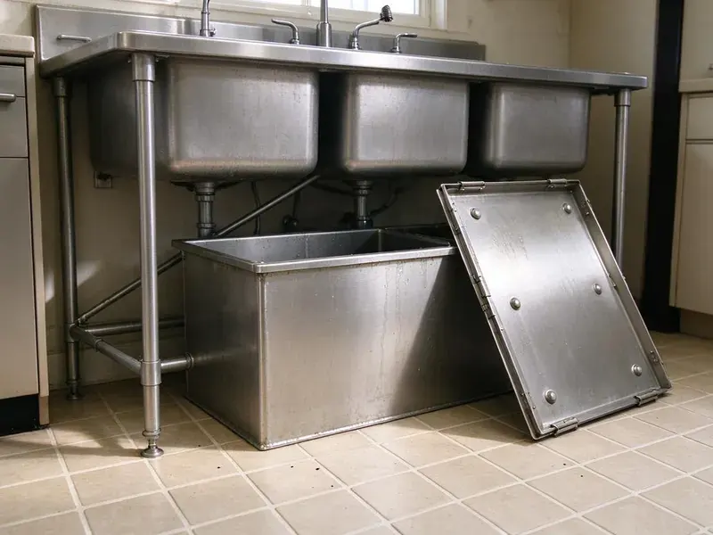

Garbage Disposal Replacement in Midwest City, OK
JBK Plumbing offers professional garbage disposal replacement services for homes across Midwest City, OK, leaving you with a clean and functional kitchen.
- Quiet and Powerful Models
- Prompt, Local Service
- Fast, Same-Day Service
- Experienced Plumbers

Professional Garbage Disposal Replacement Services Available in Midwest City, OK.
Don't let a faulty disposal disrupt your kitchen routine, JBK Plumbing provides prompt replacement solutions.
Garbage Disposal Replacement and Upgrades in Midwest City, OK
At JBK Plumbing, we provide prompt garbage disposal replacement services throughout Midwest City, OK, ensuring your kitchen plumbing operates smoothly again. Our plumbers are skilled at removing old units and installing new, reliable disposals.
Our expertise includes:
- Installing new, powerful disposal units
- Upgrading worn-out or broken disposals
- Replace sink flanges, mounts and discharge tubes as needed

Additional Kitchen Plumbing Services in Midwest City, OK
Our kitchen plumbing services in Midwest City, OK cover sinks, disposals, dishwashers, and grease traps so your kitchen keeps running without backups or leaks.


Customers
Why Choose JBK Plumbing for Garbage Disposal Replacement in Midwest City, OK?
Choosing JBK Plumbing for your garbage disposal replacement means you're getting a team that values efficiency and lasting solutions. We make sure every new unit is installed correctly, preventing future issues.
- Upgrade Options, We offer quieter, stronger models for any budget.
- Quick Swaps, Most replacements are done in about an hour.
- Haul-Away, We remove and dispose of your old unit.
Citywide Coverage
JBK Plumbing provides comprehensive garbage disposal replacement services across every neighborhood of Midwest City. From the busy downtown areas to the quieter suburbs, our local plumbers are always ready to respond.
Experienced Team
The JBK Plumbing team is highly trained in the details of garbage disposal replacement. They understand the common issues specific to Midwest City homes, ensuring a precise and long-lasting installation every time.
Safety-First Approach
We shut off power before removing the old disposal and check the electrical connection for safety. The new unit is grounded and properly secured.
Trusted Certified Midwest City Plumbing Services Professionals
At JBK Plumbing, we take pride in providing certified plumbing services throughout Midwest City, OK. Backed by recognized industry credentials, our experienced plumbers combine technical skill with genuine customer care. Whether it is repair, installation, or maintenance, we follow strict safety and quality standards to deliver long-lasting results you can trust.
Call Us Now PHCC Plumbing Contractor Recognition
PHCC Plumbing Contractor Recognition Better Business Bureau (BBB) Accreditation
Better Business Bureau (BBB) Accreditation Angi Certified Pro
Angi Certified Pro ISO 9001 Quality Management Certification
ISO 9001 Quality Management CertificationReliable Garbage Disposal Replacement Services in Midwest City, OK
Upgraded Disposal Installation in Midwest City, OK
Many homeowners in Midwest City, OK choose to upgrade to a more powerful or quieter garbage disposal during replacement. We can help you select a unit with higher horsepower, such as a 3/4 HP or 1 HP model, which can handle tougher food waste more efficiently. Upgrades often include better insulation for noise reduction and more advanced grinding technologies, providing a significant improvement over older, weaker disposals. We ensure the new unit fits properly into your existing plumbing setup.

InSinkErator Brand Replacement in Midwest City
InSinkErator is a leading brand in garbage disposals, known for its reliability. Our plumbers are experts at replacing all InSinkErator models, from the Badger series to the Evolution series. We carry common replacement parts and new units to allow a swift service. Proper installation of an InSinkErator unit involves specific mounting collar procedures and ensuring the discharge tube is correctly aligned to prevent leaks and maximize performance.
Upgrading to a Quieter Disposal in Midwest City
Older disposals can be loud and vibrate the sink. Newer models include sound insulation and anti-vibration mounts. We help you choose a quieter unit and install it carefully. Many customers are surprised at how much calmer their kitchen becomes.
Leaking Disposal Replacement in Midwest City
A leaking garbage disposal can cause significant water damage under your sink cabinet and attract pests. Often, leaks indicate internal damage or a cracked housing, making repair difficult or impossible. In these cases, replacement is the best course of action. We swiftly disconnect the old, leaking unit, clean up any water damage, and install a new disposal, making sure all seals and connections are watertight to prevent future leaks.
InSinkErator Garbage Disposal Replacement in Midwest City
InSinkErator is a leading brand, and JBK Plumbing is expert in replacing all their models, from the Badger series to the Evolution series. If your InSinkErator unit is failing, we can quickly replace it with a new one, often with minimal adjustments due to consistent product design. We carry common InSinkErator models or can source your preferred unit efficiently for replacement in your Midwest City home. Our plumbers are familiar with their specific mounting systems and electrical requirements.
Standard Garbage Disposal Replacement in Midwest City
When your existing garbage disposal fails due to wear and tear, a standard replacement is often the most cost-effective solution. We remove the old unit, thoroughly clean the connection points, and install a brand-new disposal, ensuring proper alignment with the sink drain and secure electrical connections. This service usually takes a few hours and restores full function to your kitchen sink. We ensure no leaks are present before considering the job complete.
Emergency Garbage Disposal Replacement in Midwest City, OK
A completely failed garbage disposal can quickly become an emergency, especially if it's leaking or causing serious drain issues. JBK Plumbing offers emergency replacement services in Midwest City, OK to address urgent situations. We prioritize your call and dispatch a skilled plumber to diagnose the problem and replace your unit as quickly as possible, limiting disruption and potential water damage to your kitchen. We understand that some plumbing issues can't wait.

InSinkErator Replacement in Midwest City, OK
If you already have an InSinkErator, replacement is usually quick because the mounting system often matches. We can upgrade from a Badger to an Evolution model for quieter operation and better grinding. We follow the brand's specs for wiring and drains. We also register the warranty for you.
Garbage Disposal Replacement Near Me in Midwest City, OK
When your disposal fails, you need a replacement fast. Our team works in Midwest City every day and carries popular models. Most replacements are done in about an hour.
We also know local kitchen setups and the effect of local water on disposals. That helps us recommend long-lasting models. You get a replacement that holds up.
JBK Plumbing at a Glance
- Fully licensed plumbing team covering Midwest City, OK
- Same-day appointments and 24/7 emergency response
- Clear written estimates, no hidden fees
- 4.8-star rated by 318+ Oklahoma customers
Midwest City Map
Midwest City Information
- Population
- 58,086
- Area codes
- 405/580/918
- Service area
- Midwest City and communities within 40 miles
- Nearby
- Oklahoma City, Moore, Edmond, Norman
Many rural homes rely on private wells, and some groundwater carries high mineral content that benefits from softening or filtration. A proper garbage disposal replacement in Midwest City, OK helps protect against premature wear and keeps kitchen drainage flowing.
Expert Services
Trust our professionals for reliable JBK Plumbing solutions in Midwest City, OK.
Our Specialized Plumbing Services in Midwest City, OK
At JBK Plumbing, we provide a complete range of plumbing services across Midwest City, OK. From leak detection to full system installations, our team ensures fast, precise, and affordable service for both residential and commercial properties. Explore our core services below:


How Our Garbage Disposal Replacement Process Works in Midwest City, OK
Replacing a disposal is fast and easy with our team.
Request a Quote
Contact JBK Plumbing by calling (405) 507-8396 to schedule an appointment. We'll discuss your needs and provide an upfront estimate for the replacement service.
On-Site Assessment
Our licensed plumber will arrive at your Midwest City home to check your current disposal, discuss replacement options, and help you select the best new unit.
Removal & Install
We will carefully remove your old disposal, prepare the plumbing, and expertly install your new garbage disposal, testing it carefully for proper function.
Frequently Asked Questions About Garbage Disposal Replacement in Midwest City
The cost of garbage disposal replacement in Midwest City, OK typically ranges from $200 to $500, including the new unit and labor. This can vary based on the model chosen, its horsepower, and any necessary plumbing modifications. We provide a clear quote upfront.
Most garbage disposal replacements can be completed within 1 to 2 hours. This timeframe includes disconnecting the old unit, installing the new one, and testing it thoroughly. More complex situations, such as significant plumbing modifications or electrical work, might extend the duration a bit.
To prolong the life of your new disposal, avoid putting fibrous foods like celery, corn husks, or onion skins down it. Also, do not dispose of grease, coffee grounds, or non-food items. Always run cold water before, during, and after use, and grind small amounts of citrus peels or ice cubes now and then to clean the unit.
New garbage disposals usually come with manufacturer warranties ranging from 1 to 10 years, depending on the model and brand. JBK Plumbing also provides a labor warranty on our installation services for your peace of mind.
To help it last, avoid putting fibrous or hard items like corn husks, bones, or coffee grounds down the drain. Always run cold water before and after use, and now and then grind citrus peels to keep it fresh. Regular cold water flushing helps maintain the unit.
Leaks from the body, frequent resets, constant jams, loud grinding and age over ten years are common signs.
Most replacements take about an hour. Upgrades with new electrical or drain changes may take a bit longer.
If your disposal is old, frequently leaking, or making grinding noises without grinding food, replacement is usually more cost-effective and provides a longer-lasting solution. Minor issues like a simple jam can often be repaired.
What People Are Saying About Our Plumbing Experts?

Laura S.
I scheduled a water heater replacement, and the team made the process smooth and affordable. The new unit works perfectly, and they cleaned up after completing the job.
Water Heater Replacement · Shawnee, OK
James P.
Our commercial plumbing system had a leak under the sink, and JBK Plumbing handled it professionally. The plumbers arrived quickly and restored everything without disruption to our customers.
Commercial Plumbing · Moore, OK
Daniel K.
A pipe burst at 11 pm and they actually answered. The plumber showed up within the hour, shut everything down, and had us back to normal the next morning. Could not ask for more.
Emergency Plumbing · Shawnee, OKRobert G.
The trenchless sewer replacement saved our front yard. They walked us through the camera inspection footage first so we knew exactly what we were paying for.
Sewer Line Replacement · Oklahoma City, OK
Emily R.
I called JBK Plumbing for plumbing repair, and the technician was fast, polite, and thorough. They explained the problem clearly and fixed it the same day. I will definitely hire them again. Highly recommended!
Plumbing Repair · Shawnee, OK
Mark T.
When our office needed drain cleaning, JBK Plumbing provided quick, reliable service. The plumber arrived on time and made sure every drain flowed perfectly before leaving. Very satisfied.
Drain Cleaning · Moore, OK